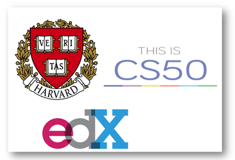

Thanks for dropping by! This site is my Project0 four page site for Harvard's CS50W Programming for the Web,
with
HTML, CSS, JavaScript and Python.

Project Requirements:
Four hyperlinked .html pages
At least one list (ordered or unorderd)
At least one external stylesheet
At least five different CSS properties, and at least five different types of CSS selectors. Need to use the #id selector at least once, and the .class selector at least once
at least one mobile-responsive @media query,
Bootstrap 4 - CSS Framework with one component, and at least two column grid layouts
Sass - Compiled Sass to CSS, with at least one SCSS variable, and at least one use of SCSS inheritance
The README.md shout include a short writeup describing the project, and what is contained in each file